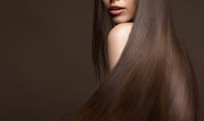

THE DIFFERENCE BETWEEN FADES, TAPERS, AND BLENDS
Thinking of trying out a brand-new look, but not exactly sure how to explain it to your stylist? One way to help ensure you get a cut you love is to bring in a pic or two to share with your POPULARITY SALON stylist. And another way to help the conversation along is to have these basic haircut terms down.
Hi-Top Fade
Good For:
Curly, Thick, Wavy, Texture
Long on top, tighter on the sides, the hi-top fade is a throwback to '80s and '90s fashion that’s a hot trend for 2019. A free-handed clipper cut that can easily be customized, there are endless variations possible.
Longer Comb Over
Good For:
Curly, Thin, Wavy, Straight
Show off healthy, shiny hair with a side part and long layers. By creating a firm part and combing the layers to the side, the face is framed and natural highlights come to life. A classic old Hollywood style, give the cut new life by giving it a messy, piece-y look or sweeping it back into a pompadour.
Longer Layers
Good For
Curly, Thin, Wavy, Straight
Want to keep your thick hair in check, while keeping some length? One way is with the classic longer layers cut. First, the sides and back are trimmed. Then the top is cut with a scissors-and-comb cutting technique. It’s then joined with the sides and back. Finally, this sharp style is finished with a cleaned-up, square neckline that brings together the overall look. Clean and trim without being boring, long layers offer a number of styling options so you can change up the look with the help of a product or two.
Taper Fade
Good For
Curly, Thick, Wavy, Texture
It’s all about the transitions with the timeless taper fade. The hair is clipper cut, and made gradually shorter, until it reaches the ears and neckline. The front hairline can be lined up to give it a very finished look. The taper fade is a fresh, detailed cut that’s great for naturally textured hair. A no-fuss option for the guy who likes to wash and go, this cut will look fresh and sharp every day.
Textured Comb Over
Good For:
Curly, Thin-to-Thick, Wavy, Texture
Want a men’s haircut with a little length that still looks neat and cleaned up? A long clipper haircut like this may be just the thing. First, a clipper is used to cut the sides and back to around 3/4 of an inch. Then the top is scissor trimmed with the short sides and back to bring the ook together for a smooth transition. The style’s completed with a sharp neckline that’s kept tight over the ears and blends into the sideburns. It’s a solid choice for the guy who doesn’t want to go super short, and wants flexibility to change up the look for different occasions.
Textured Pompadour
Good For
Curly, Thick, Wavy, Straight
Classic, iconic and never boring, today’s casual pompadour holds strong as one of the most stylish of men’s cuts. By pairing tight sides with long layers, the cut can be tailored to best suit your face shape and styling preferences. Longer layers make for a smooth lift, while a shorter version can be spiked and sporty. A complementary cut for all face shapes, it can be quickly styled for daily wear or made into more statement-worthy looks with the right products.
Traditional Brush Up
Good For
Curly, Thick, Wavy, Texture
Low on maintenance, high on style, the brush up is a fool-proof style for a guy on the go. With its clean lines and sharp neckline, it looks fresh and professional, but with a little product it can be made more messy and spiky. All face shapes are complemented by this cut, and it works well for all hair types and textures too.
From easy-to-understand styling tips to the latest in hair care products, POPULARITY SALON is here to help you get a look you'll love.